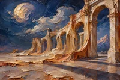

Monumental Dissolution
Stone loses its edge and becomes pigment.
VISUAL DIRECTION 01 — AN ADDITIVE MODULE, NOT A NEW DESIGN OS
Sculptural Impasto bukan efek yang ditempel ke website. Ini cara memetakan komposisi lukisan minyak timbul menjadi hierarki, ritme, dan ruang baca yang disengaja.
Eksperimen studio dengan konten fiktif. Tidak memuat CV, karya, atau kutipan dari klien nyata.
Bandingkan ketiga tata letak dengan **lukisan dan kata yang sama**. Satu gambar per scene, tanpa SVG, tanpa kolase objek dan tanpa cahaya buatan CSS.
AN EXERCISE IN IMPOSSIBLE MATERIALS
Atelier Sera is a fictional speculative architecture practice used only to test painting-to-layout mapping.
Read mapping notes
Stone loses its edge and becomes pigment.
A sequence of arches becomes a river of paint.
A stairway climbs toward an upside-down sea.
Research material only. No client claims.
Stone loses its edge and becomes pigment.
ILLUSTRATIVE STUDY — NOT A BUILT PROJECTReading the material. The plate is independent from factual descriptions; no fictional artwork is presented as client evidence.
Read mapping notes ↗A SPECULATIVE ARCHITECTURAL ESSAY
Atelier Sera is a fictional speculative architecture practice used only to test painting-to-layout mapping.
Stone loses its edge and becomes pigment.
A sequence of arches becomes a river of paint.
A stairway climbs toward an upside-down sea.
Statement → single painting → research register → quiet closing.
An image-led approach can conceal dense professional credentials.
Fictional R&D study. Mapping requires client evidence, typography approval, original-resolution art and visual QA before production.
Art direction here is not a house layout. The production decision comes from verified client work and audience needs. A dramatic painting is optional when evidence needs a quieter information architecture.
Read the full mapping protocol ↗